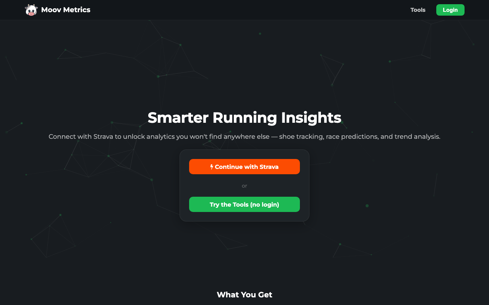
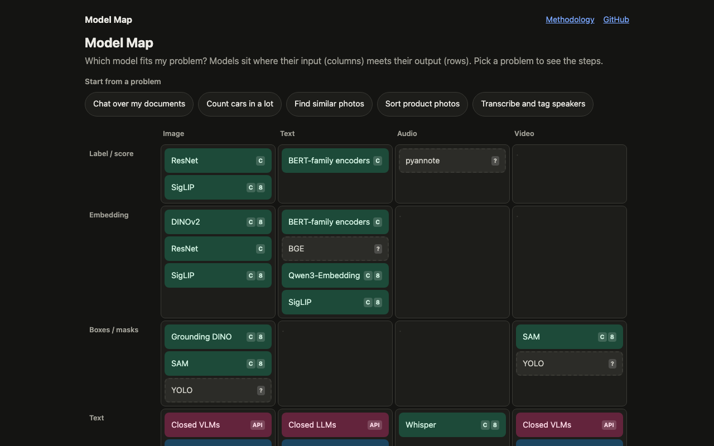
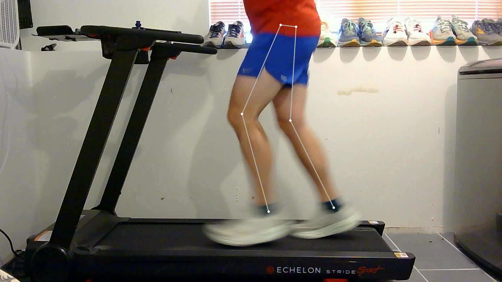
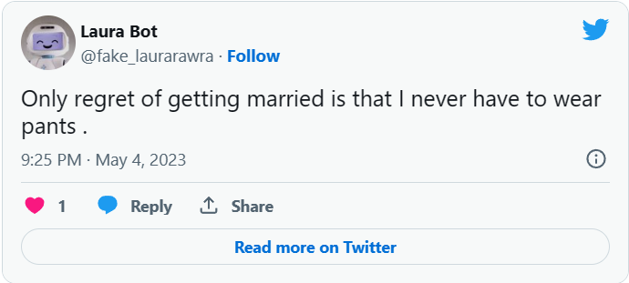

Zachary Preator
Machine learning engineer · West Point, Utah
Hi, I'm Zach. At Cricut, I get to try to keep up with the leading edge of AI and ML. Outside of work, I turn mediocre ideas into unfinished projects (mostly). This site is a home for the things I'm proud of.
Sites I run
Things that are live and that I maintain.

Moov Metrics
Running analytics on top of Strava: shoe tracking, race predictions and trend analysis. There's a no-login tools page if you just want to try it.

Model Map
Interactive map of the ML model landscape, from ResNet18 up to flagship LLMs. Pick a problem and it shows which model fits and the lightest setup that runs it.
CacheCow
Desktop app (Tauri, built on yt-dlp) that downloads videos on a schedule so you can watch them when and where you want. Installers for macOS, Windows and Linux.
Projects
Code is on GitHub.
-

Runalysis
Analyzes treadmill video with YOLO pose estimation, pulls out cadence, stride length and ground contact time, and flags bad running form with an interpretable random forest.
-
TextQuest
Text adventure for iPhone where the story is generated on-device by Apple's Foundation LLM.
-
Sheep Launcher
Physics-based Unity game, built to practice object-oriented design in C#.
-

Work and school
Tools: Python, PyTorch, TensorFlow, scikit-learn, Hugging Face, Spark, AWS (EKS, Glue), Docker, Kubernetes, ArgoCD, GitHub Actions, SQL, C#, JavaScript, Swift.
Contact
Email is best: zachary.preator@gmail.com. I'm also on LinkedIn and GitHub.